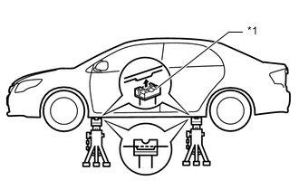
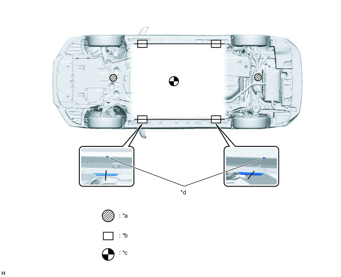
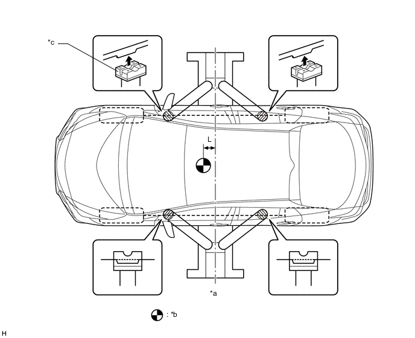
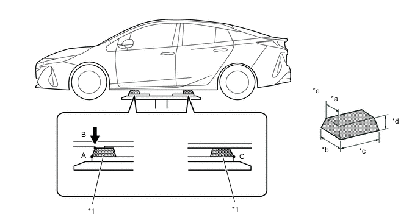

NOTICE ABOUT VEHICLE CONDITION WHEN RAISING VEHICLE
The vehicle must be unloaded before jacking up or raising the vehicle. Never jack up or raise a heavily loaded vehicle.
When removing any heavy components like the engine or hybrid transaxle, the vehicle center of gravity will shift. To stabilize the vehicle, place a balance weight in a location that will prevent the vehicle from rolling or shifting, or place a transmission jack under the appropriate jack position at the opposite end of the vehicle.
NOTICE FOR USING 4 POST LIFT
Follow the safety procedures outlined in the lift's instruction manual.
Do not damage the tires or wheels while driving onto the lift.
Use wheel chocks to secure the vehicle.
NOTICE FOR USING JACK AND SAFETY STANDS
Work on a level surface. Use wheel chocks at all times.

| *1 | Rubber Attachment |
Use safety stands with rubber attachments as shown in the illustration.
Set the jack and safety stands exactly under the specified locations on the vehicle.
Never set the jack or safety stands under suspension parts, such as a front lower arm, when jacking up the vehicle.
Do not work on or leave the vehicle supported only by a jack. Be sure to support the vehicle with safety stands.
When jacking up the vehicle, first release the parking brake, then move the shift lever to N and confirm that neutral (N) has been selected.
When jacking up the entire vehicle:
When jacking up the front wheels first, make sure wheel chocks are behind the rear wheels.
When jacking up the rear wheels first, make sure wheel chocks are in front of the front wheels.
When jacking up only the front or rear wheels of the vehicle:
Before jacking up the front wheels, place wheel chocks on both sides of the rear wheels.
Before jacking up the rear wheels, place wheel chocks on both sides of the front wheels.
When lowering a vehicle that only has its front or rear wheels jacked up.

| *a | JACK POSITION | *b | SUPPORT POSITION - Safety stand - Swing arm type lift - Plate type lift |
| *c | VEHICLE CENTER OF GRAVITY (Unloaded Condition) | *d | Mark |
Before lowering the front wheels, make sure wheel chocks are in front of the rear wheels.
Before lowering the rear wheels, make sure wheel chocks are behind the front wheels.
NOTICE FOR USING A SWING ARM TYPE LIFT
Follow the safety procedures outlined in the lift's instruction manual.
Use swing arms equipped with rubber attachments as shown in the illustration.
Position the vehicle so that its center of gravity is centered on the lift (length of "L" in the illustration should be as short as possible).
Ensure that the rubber cushions or swing arms do not contact the body cladding or lower mouldings.
Be sure to lock the swing arms before raising the vehicle (if equipped with arm locks).
Use the lift to raise the vehicle until the tires are off the ground, then stop the lift and shake the front and rear of the vehicle to make sure that it is stable.

| *a | Center of lift | *b | VEHICLE CENTER OF GRAVITY (Unloaded Condition) |
| *c | Rubber Attachment | - | - |
NOTICE FOR USING PLATE TYPE LIFT
Follow the safety procedures outlined in the lift's instruction manual.
Use plate lift attachments (rubber lifting blocks) on top of the plates.
Be sure to set the vehicle to the specified position described in the following chart and shown in the following illustration.
| Right and left set position | Center the vehicle on the lift. |
| Front and rear set position |
|
Ensure that the plate lift or rubber lifting blocks do not contact the body cladding or lower mouldings.
Use the lift to raise the vehicle until the tires are off the ground, then stop the lift and shake the front and rear of the vehicle to make sure that it is stable.

| *1 | Attachment | - | - |
| *a | 85 mm (3.35 in.) | *b | 100 mm (3.94 in.) |
| *c | 200 mm (7.87 in.) | *d | 70 mm (2.76 in.) |
| *e | Attachment Dimensions | - | - |